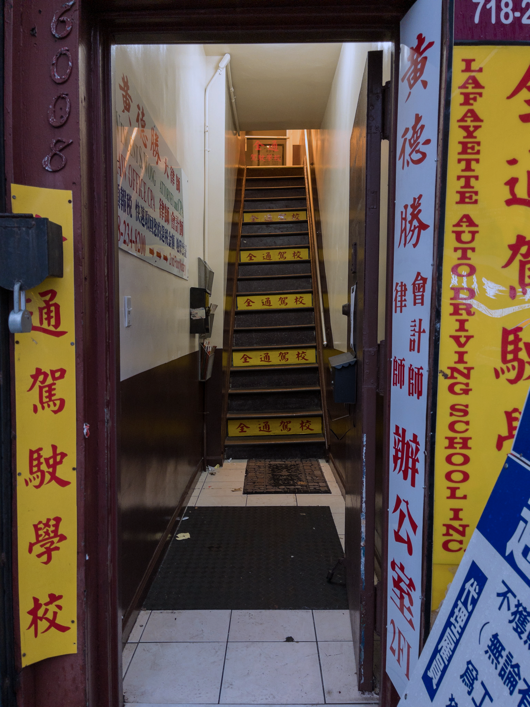
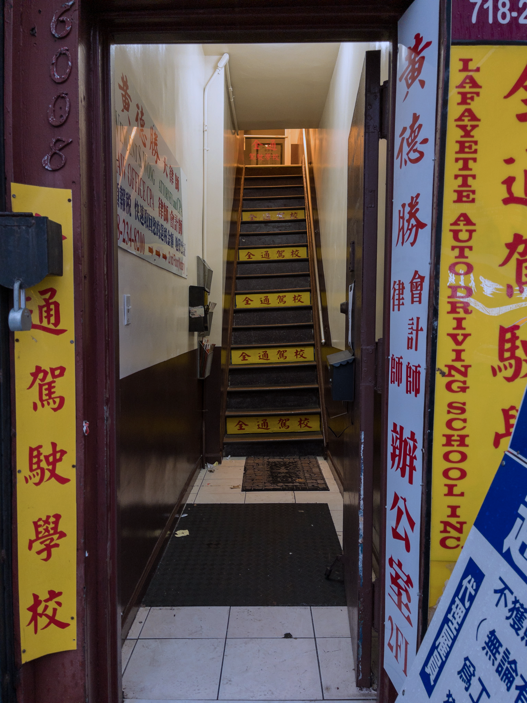

When I first stepped off of the N train, I was joined by a large group of other Chinese passengers all headed down 8th Avenue. As we neared the intersection, the street before us was lined by stalls and stands presenting everything from fruit to fish. I felt at home, as if I were on a grocery run with my grandmother in Zhejiang. The casual chatter around me was mostly in Mandarin and various other dialects, not as Cantonese-heavy as Manhattan’s Chinatown. Compared to the scene at Canal Street, there was a bigger variety of shops and stores and less souvenir stalls and big fancy restaurants marketed towards tourists and foreigners to the culture. I passed by an herb and medicine shop, bakeries with various Chinese pastries, bubble tea stores, fruit vendors, seafood displays, and jianbing carts. Under the persistent rain and the dark blues and grays of tarps, the sidewalks were filled with life and color.
Brooklyn’s first and NYC’s third Chinatown, and easily one of the largest Chinatowns in New York City, Sunset Park started to gain its Chinese population around the 1980s, attracting both immigrants from China and residents of Manhattan’s Chinatown seeking a new place to live. According to the NYU Furman Center, 34.8% of Sunset Park’s population identified as Asian in 2019 and 46% was born outside of the U.S. The median household income of Sunset Park residents in 2020 was $69,030. The exact parameters of this Chinatown’s location have been vague and steadily growing in size. Steve Mei, director of Brooklyn Community Services for the Chinese-American Planning Council, described the neighborhood as roughly running from Fifth Avenue to Ninth Avenue and 40th Street to 68th Street in 2017.
However, what has always been clear is the centering of Eighth Avenue, which happens to have a name that also contains cultural significance. The number eight is considered lucky in Chinese culture because it sounds like the word for “prosper” and thus indicates economic success, making it very popular among Chinese people establishing businesses. Another symbolic source of geographical optimism for this community is highlighted by the Brooklyn Chinese-American Association:


 
